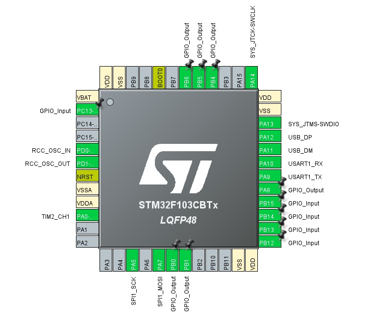
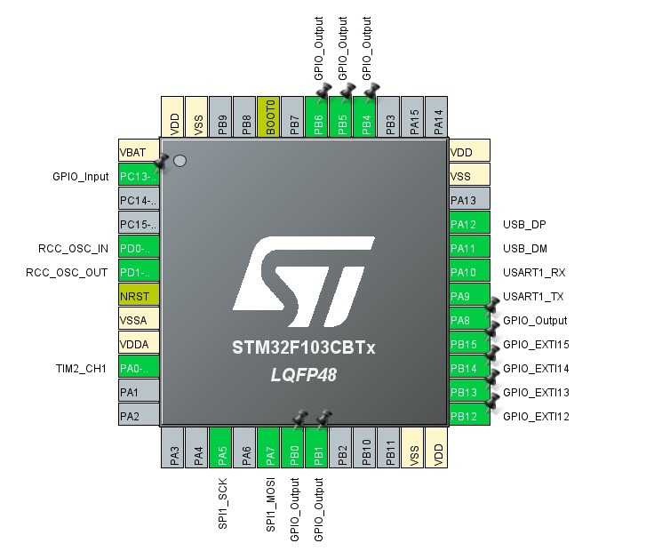
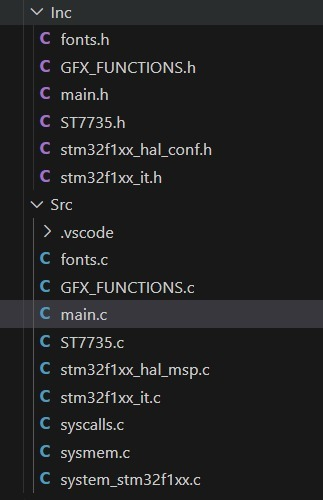
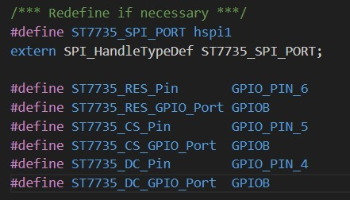
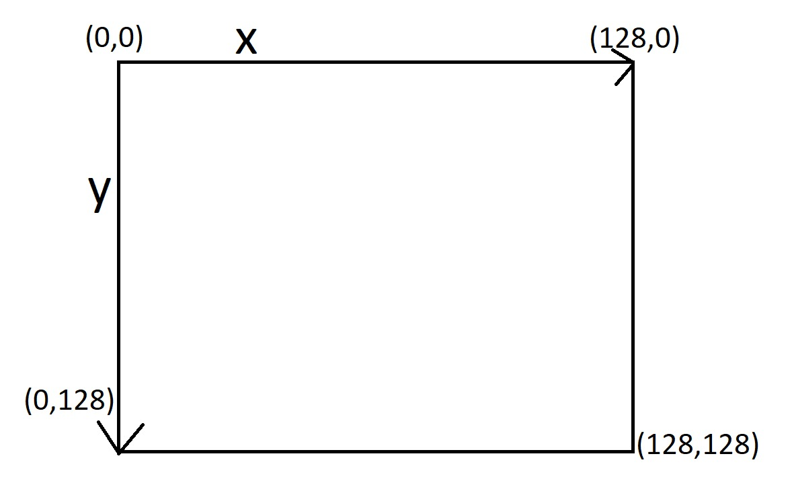
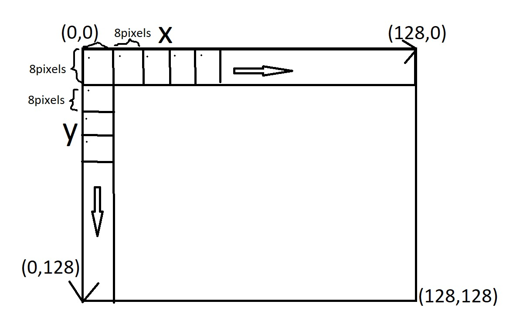
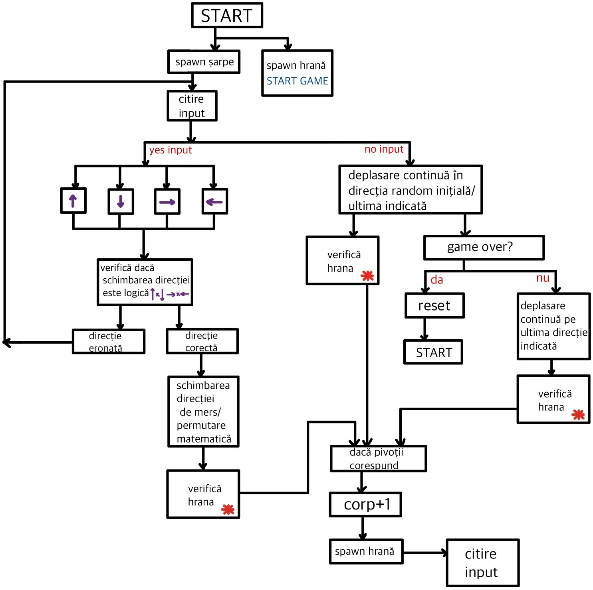
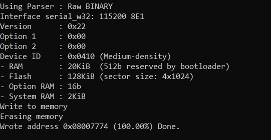

După cum se poate vedea și în imaginea de mai sus, în cadrul proiectului, pe lângă setările softului de test, am adăugat în plus pini pentru comunicația cu ecranul (de tipul SPI) și 4 pini de input. Pinul A5 reprezintă pinul ce realizează legătura de ceas dintre dispozitive (Serial Clock), pinul A7 (Serial Data) realizează legătura de date dintre dispozitive, iar pinii PB6, PB5 și PB4 sunt pinii pentru reset, chip select și register select. Ecranul folosește o comunicație Half Duplex Master, în sensul în care doar masterul trimite date către dispozitivul periferic, și nu viceversa. Pinul clasic MISO nu există, vom folosi doar pinul MOSI (anume pinul SDA - Serial Data).
Pinii PB12, PB13, PB14 și PB15 sunt pini de INPUT la care vom conecta butoanele direcționale pentru a mișca caracterul (șarpele) pe ecran. Acestea vor fi implementate folosind o rezistență de PullDown, astfel, odată ce apăsăm pe buton, se va trimite un semnal de HIGH către pin.
Vom folosi de asemenea pentru obținerea unei performante mult mai bune (Program Counter rapid), ceasul exterior cu cuarț din cadrul plăcuței, avand o valoare de 72 MHz. Pentru utilizarea timerului vom seta un prescaler de 7199, astfel obținând o frecvență de 10 kHz. Counter period-ul va avea rolul de a număra semnalele de ceas, setându-l la o valoare de 100, vom obține 10 kHz/100, adică 100. Acest număr indică faptul că în fiecare secundă întreruperea în sistem va avea loc de 100 de ori (astfel funcția de întrerupere din cadrul softului se va apela de 100 de ori pe secundă, putand astfel tine cont de trecerea unui anumit interval de timp, lucru util in cadrul proiectarii jocului).
De asemenea, pinii deja configurați sunt RCC_OSC_IN/RCC_OSC_OUT PD0 care sincronizează operațiile din microprocesor cu un semnal de ceas extern, TIM2_CH1 pentru timerul setat de noi, PA10 și PA9 pentru comunicația UART, PA11 și PA12 pentru comunicația USB, cât și diferiți pini pentru un LED RGB și butoanele de RESET și USER.
În urma dezvoltării software a jocului acesta a ajuns să dețină o complexitate destul de ridicată, astfel în urma testării acestuia am observat că există un Delay destul de mare în ceea ce privește citirea inputului (există o întârziere nedatorată Debouncingului ci a complexității codului). Prin urmare ne-am gândit ca inputul să nu fie tratat standard, fiind practic verificată o condiție într-o anumită zonă de cod, ci ca o întrerupere în sistem. Butoanele acum nu sunt setate ca inputuri normale ci ca întreruperi de sistem exterioare. Odată ce apăsăm pe un buton de schimbare a direcției(eveniment), se va activa în sistem o întrerupere anume o funcție specială va fi apelată, funcție în care vom schimba direcția de deplasare a șarpelui.


În cadrul dezvoltării software, am folosit librării specifice driverului ecranului st7735, alături de librăria principală grafică Adafruit_GFX. Am adaugat 3 fisiere sursa (.c) si 3 fisiere header (.h), st7735,GFX_FUNCITONS si fonts in care sunt descrise si setate driverele de functionare dintre ecran si microcontroler. Regasim in aceasta librarie diferite functii specifice precum de a colora pixeli la anumite coordonate carteziene, de a colora intreg ecranul sau de a afisa un string (sir de caractere) pe ecran. De asemenea in headerul principal ST7735.h am setat pinii de configurare hardware (RST, CS,RS), tipul ecranului folosit (rezolutia) cat si orientarea.

Pentru a proiecta clasicul joc Snake, va trebui să urmărim configurația spațială/matematică a ecranului LCD. Ecranul folosit are rezoluția de 128x128, practic avem pe lungime cât și pe lățime 128 de pixeli. Axa de coordonate (0,0) este colțul din stânga sus a ecranului. X și Y crescând astfel de sus în jos și de la stânga la dreapta.
Pentru a crea șarpele pe ecran, am hotărât printr-un calcul simplu să împartim ecranul. Dacă avem 128 de pixeli, am împărțit ecranul la 8 (lungimea și lățimea), astfel putem ocupa pe ambele direcții (x,y) un număr de 128/8 - 16 spații. Un număr de 16 spații este suficient pentru implementarea jocului, în funcție de preferințe putem alege și un număr de 128/4 - 32 de spații, dar am considerat că 16 ar fi ideale, mai ales că ecranul folosit este unul destul de mic. Prin urmare, hrana cât și șarpele vor fi reprezentate printr-un pătrat de pixeli de 8x8, rezolvând problema spațierii în ecran.
În mod suplimentar, putem alege dacă să micșorăm ecranul de joc pentru a vedea scorul în timp real într-un rând de jos lăsat liber de 8 pixeli înălțime, însă având ecranul mic am preferat să afișăm scorul odată ce jocul s-a terminat, lăsând jucătorului mai mult spațiu.

Va trebui să urmărim etape cruciale în dezvoltare software a jocului precum:
Logica deplasării șarpelui:
Logica actualizării scorului/creșterea în lungime:
Un aspect important este reprezentat de butoane, care din punct de vedere software vor fi implementate ținându-se cont de fenomenul de debouncing, pentru a oferi jucătorului o dinamică rapidă a răspunsului la input.
In urma dezvoltarii jocului am adaugat urmatoarele modificari:


Microcontrolerul STM32F103CBT6 are următoarele specificații: